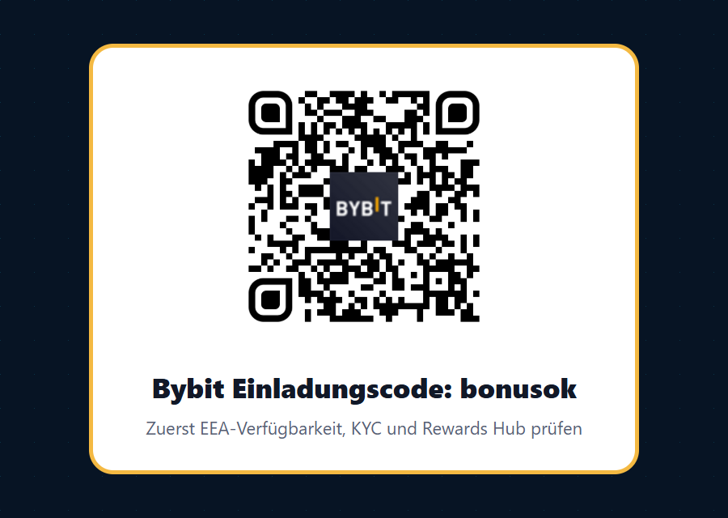
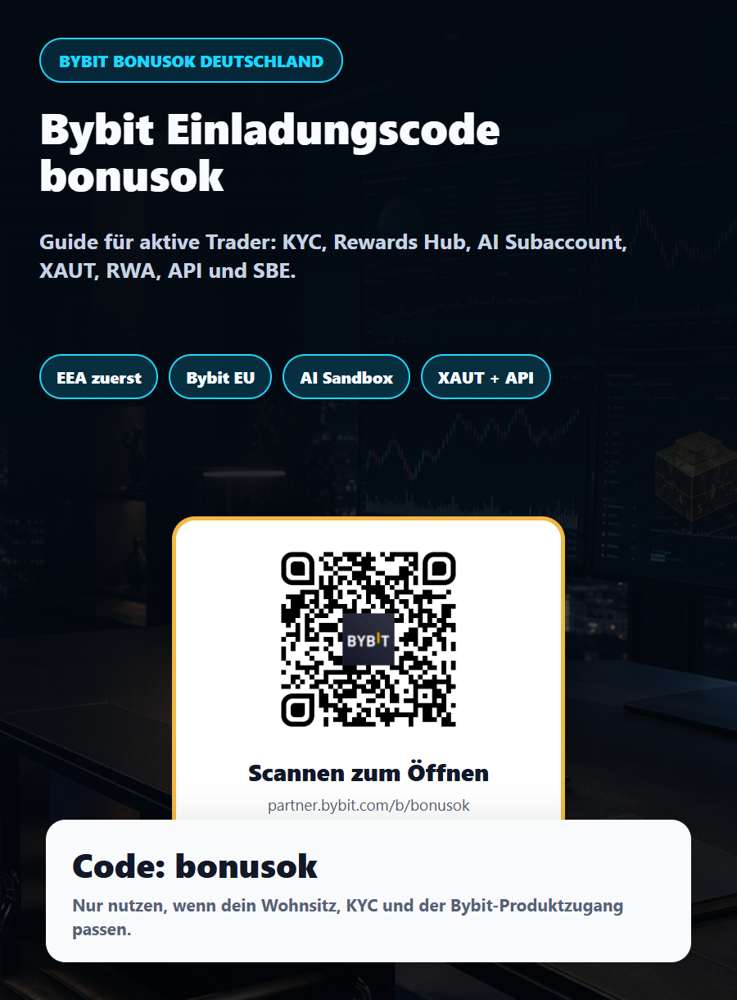

Kurzfassung: der Bybit Einladungscode ist nur der Startpunkt
Wer in Deutschland oder in einem anderen deutschsprachigen Markt nach "Bybit Einladungscode", "Bybit Bonuscode", "Bybit Referral Code" oder "Bybit Referenzcode" sucht, findet häufig nur eine kurze Code-Zeile. Für aktive Trader ist das zu wenig. Ein Code kann nützlich sein, wenn er korrekt im Registrierungsfluss steht und wenn die eigene Region, die KYC-Stufe und das konkrete Produkt überhaupt zum Angebot passen. Genau deshalb beginnt dieser Artikel nicht mit einer Bonus-Behauptung, sondern mit einer Prüfung.
Der Code lautet bonusok. Der direkte Partner-Link ist partner.bybit.com/b/bonusok. Über diesen Link kann die Registrierung oder das Öffnen der Bybit-Seite gestartet werden. Trotzdem gilt: Rewards, Gutscheine, Gebührenvorteile, Kampagnenzugang und Produktverfügbarkeit hängen von Bybits aktuellen Regeln, von Identitätsprüfung, Land, Wohnsitz, Nutzertyp und Aktionsbedingungen ab. Dieser Guide formuliert daher bewusst "prüfen", nicht "garantiert bekommen".
Für Deutschland ist die Einordnung besonders wichtig. Bybit hat Ende Juni 2026 offiziell mitgeteilt, dass Bybit Global seine Services für Nutzer im Europäischen Wirtschaftsraum schrittweise einschränkt. Deutschland gehört zum EEA-Kontext. Parallel stärkt Bybit seine europäische Struktur über Bybit EU und den MiCAR-Rahmen. Praktisch heißt das: Ein deutscher Trader sollte nicht blind irgendeinen Global-Link öffnen und sofort Kapital einzahlen, sondern zuerst prüfen, welche Bybit-Entität, welche Produkte und welche Bonusbedingungen für den eigenen Wohnsitz tatsächlich gelten.

QR-Code und Link
Der QR-Code führt zum Partner-Link mit dem Code bonusok. Nutze ihn nur, wenn dein Wohnsitz, deine KYC-Daten und der für dich sichtbare Bybit-Registrierungsfluss zusammenpassen. Umgehung über VPN, falsche Adresse oder fremde Identität ist keine gute Idee und kann laut Bybit zu Kontosperrung, Auflösung von Positionen oder anderen Einschränkungen führen.
Deutschland, EEA und Bybit EU: die wichtigste Prüfung vor dem Bonus
Für deutschsprachige Nutzer ist "Kann ich Bybit nutzen?" keine theoretische Frage. Die Bybit-Bekanntmachung vom 29. Juni 2026 nennt ausdrücklich den Europäischen Wirtschaftsraum und beschreibt, dass Nutzer in EEA-Ländern, darunter Deutschland, Frankreich, Italien, Spanien und weitere Märkte, von schrittweisen Einschränkungen bei Bybit Global betroffen sein können. Gleichzeitig verweist Bybit auf Bybit EU als regulierten europäischen Pfad. Wer also aus Deutschland, Österreich, der Schweiz, Luxemburg, Liechtenstein, Belgien oder einer deutschsprachigen Diaspora kommt, sollte den sichtbaren Registrierungsfluss genau lesen.
MiCAR hat den Kryptomarkt in der EU strukturierter gemacht, aber nicht automatisch jedes globale Börsenprodukt für jeden EU-Nutzer freigegeben. Spot-Handel, Verwahrung, Fiat-Einzahlung, Earn-Produkte, Derivate, Optionen, Copy Trading, Bots, API-Funktionen, Wettbewerbe und Rewards können unterschiedliche Regeln haben. Ein Angebot, das ein internationaler Trader sieht, kann für einen EEA-Nutzer eingeschränkt, umgeleitet oder gar nicht verfügbar sein. Genau hier entsteht der Mehrwert einer sauberen Checkliste: Nicht der lauteste Bonus gewinnt, sondern der Weg, der später nicht an KYC, Wohnsitz oder Produktgrenzen scheitert.
Der nüchterne Ablauf lautet: Öffne Bybit, prüfe, welche Entität dir angezeigt wird, lies die Hinweise für Deutschland oder EEA, kontrolliere die restricted-country Liste, bestätige nur echte persönliche Daten und entscheide erst danach, ob ein Konto, eine Einzahlung und ein Bonusversuch sinnvoll sind. Falls der Registrierungsfluss dich auf Bybit EU führt, bewerte Bybit EU nach dem tatsächlich verfügbaren Produktkatalog. Falls Bybit Global bei deinem Wohnsitz nicht verfügbar ist, versuche nicht, das zu umgehen.
So nutzt du den Bybit Code bonusok sauber
Der sauberste Weg ist einfach, aber er sollte nicht hastig durchgeführt werden. Öffne zuerst den Partner-Link oder scanne den QR-Code. Achte darauf, dass im Registrierungsfenster der Referenzcode bonusok angezeigt wird oder dass ein Feld für den Einladungscode vorhanden ist. Wenn der Code fehlt, brich nicht in Panik ab, sondern suche im Formular nach "Referral Code", "Invite Code", "Einladungscode" oder "Referenzcode". Unterschiedliche Bybit-Oberflächen können je nach Land und Gerät anders aussehen.
Danach folgt die Identitätsprüfung. Für Rewards, Wettbewerbe und viele Handelsfunktionen verlangt Bybit in der Regel eine Verifizierung. Für aktive Trader ist KYC nicht nur eine Formalität, sondern eine Risiko- und Planungsfrage. Wenn du später mit größeren Beträgen, API-Keys, Unterkonten, Earn-Produkten, Derivaten oder institutionellen Ausführungswegen arbeiten willst, möchtest du nicht erst im entscheidenden Moment feststellen, dass deine Verifizierung, dein Wohnsitz oder dein Produktzugang nicht passt.
- Öffne den Link Bybit mit bonusok oder nutze den QR-Code.
- Kontrolliere im Formular, ob bonusok als Referral Code, Invite Code oder Einladungscode erscheint.
- Prüfe Wohnsitz, KYC-Land, Bybit-Entität und verfügbare Produkte für Deutschland oder deinen tatsächlichen Standort.
- Öffne den Rewards Hub und lies jede Aufgabe: Frist, Mindestvolumen, Einzahlungsbedingung, Gültigkeit und Ausschlüsse.
- Starte klein. Teste Ein- und Auszahlung, Gebühren, Orderausführung, 2FA, Sicherheitseinstellungen und Support, bevor du große Strategien migrierst.
Wichtig ist auch die Reihenfolge. Manche Rewards müssen vor einer Einzahlung, vor dem ersten Trade oder innerhalb eines bestimmten Zeitfensters aktiviert werden. Andere werden als Gutschein, Bonus, Trial Fund, Fee Voucher oder Task Reward dargestellt und können verfallen. Deshalb ist der Rewards Hub nach der Registrierung dein erster Kontrollpunkt. Wer nur schnell einzahlt und danach nach dem Bonus sucht, verschenkt möglicherweise Aufgaben oder läuft in Bedingungen, die nicht mehr erfüllt werden können.
Warum Bybit für aktive Trader trotzdem spannend bleibt
Der Grund, warum wir Bybit für aktive Trader weiterhin beobachten, ist nicht ein einzelner Gutschein. Die Börse positioniert sich stark bei Ausführung, Automatisierung, Subaccounts, API, RWA-Produkten, Optionen und Trading-Kampagnen. Genau diese Themen sind für Nutzer interessant, die nicht nur gelegentlich Bitcoin kaufen, sondern Strategien testen, Risiko isolieren, Orders präzise ausführen, mehrere Handelsideen parallel fahren und Produktneuheiten früh verstehen wollen.
Das erste Thema ist AI Subaccount. Bybit beschreibt dieses Produkt als isolierten Ausführungsbereich für KI- oder automatisierte Strategien. Der wichtige Punkt ist nicht "KI macht dich reich", sondern Isolation. Ein Subaccount kann helfen, Kapital, API-Zugriff, Strategiefehler und operative Risiken von deinem Hauptkonto zu trennen. Für deutsche und europäische Trader ist das besonders wertvoll, falls ein Produkt verfügbar ist: Wer automatisierte Systeme testet, sollte nie das gesamte Konto einer neuen Strategie aussetzen.
Das zweite Thema ist professionelle Orderausführung. Bybit hat in den letzten Monaten SBE Order Entry und POV Order beworben. SBE ist für institutionelle oder sehr aktive Nutzer interessant, weil es eine leistungsorientierte Order-Entry-Struktur anspricht. POV Order zielt auf größere Trades, die entlang eines Anteils am Marktvolumen ausgeführt werden sollen. Für den Durchschnittsnutzer sind diese Begriffe vielleicht zu technisch. Für aktive Trader sind sie aber starke Signale: Bybit investiert in Infrastruktur, nicht nur in Marketing.
Das dritte Thema sind RWA und XAUT Options. Bybit hat den Start von XAUT Options als Optionsprodukt auf tokenisiertes Gold kommuniziert. Für Trader, die Krypto nicht isoliert betrachten, sondern Volatilität, Goldnarrativ, Dollar-Liquidität und Hedging kombinieren, ist das ein spannender Ansatz. Auch hier gilt: Verfügbarkeit zuerst prüfen, insbesondere in EEA-Ländern. Aber als Markttrend ist klar, dass Bybit versucht, Kryptohandel mit Real-World-Asset-Themen zu verbinden.
Das vierte Thema ist der Rewards Hub. Für aktive Trader kann ein Reward nur dann wertvoll sein, wenn er zu ohnehin geplanten Aktivitäten passt. Ein Bonus, der dich zu übergroßen Positionen, unnötigem Hebel oder Wash-Trading verleitet, ist kein Vorteil. Ein Voucher, der auf ein geplantes Onboarding, eine kleine Testeinzahlung oder eine ohnehin sinnvolle Handelsaktivität fällt, kann dagegen helfen, die ersten Kosten zu senken oder Funktionen mit weniger Reibung zu testen.
Aktuelle Bybit-Neuheiten, die wir für den deutschen Guide ausgewählt haben
Für diese Seite haben wir nicht versucht, jede Bybit-Ankündigung zu erwähnen. Entscheidend war die Frage: Welche Neuigkeiten können aktive deutschsprachige Trader wirklich anziehen, ohne unseriös zu wirken? Die Antwort ist eine Mischung aus Compliance, Infrastruktur und konkreten Trading-Werkzeugen.
1. EEA-Hinweis und Bybit EU
Der wichtigste Hook für Deutschland ist die offizielle EEA-Mitteilung. Sie ist kein Verkaufsargument, aber sie schafft Vertrauen, weil ein deutscher Nutzer sofort merkt: Diese Seite ignoriert die schwierige Frage nicht. Wenn ein Referral-Artikel für Deutschland nur "Bonus holen" sagt und die EEA-Umstellung verschweigt, ist er schwach. Unser Ansatz ist ehrlicher: Erst klären, ob Bybit EU, Bybit Global, Produktzugang und Bonusbedingungen für dich passen, dann den Code nutzen.
2. AI Subaccount und First Trade Hall of Fame
Bybits AI-Subaccount-Kampagne und die First Trade Hall of Fame zeigen, dass die Börse das Thema KI-gestütztes Trading aktiv in den Vordergrund stellt. Besonders interessant ist, dass eine Kampagne nicht zwingend Gewinn vorweisen muss, sondern die erste Erfahrung mit AI Subaccount sichtbar macht. Für aktive Trader ist das ein guter Einstieg in eine Sandbox-Denkweise: klein testen, isolieren, dokumentieren und erst später skalieren.
3. XAUT Options und RWA-Thema
XAUT Options sprechen Trader an, die Krypto, Gold und Optionsvolatilität zusammen denken. Für Deutschland müssen wir vorsichtig bleiben, weil Optionen und Derivate reguliert und regional unterschiedlich verfügbar sind. Trotzdem ist es ein starkes Keyword-Feld: Bybit, XAUT, tokenisiertes Gold, RWA, Optionen, RFQ und aktive Trader. Wer solche Begriffe sucht, ist oft deutlich wertvoller als ein Nutzer, der nur irgendeinen Bonus abgreifen möchte.
4. SBE Order Entry, API und POV Order
Für sehr aktive Händler, Arbitrage-Teams, Market-Maker, Entwickler und semiprofessionelle Strategen sind Ausführungsqualität, API-Stabilität und Ordertypen entscheidend. SBE Order Entry und POV Order sind deshalb keine Nebenbegriffe, sondern ein Teil der Positionierung: Dieser Bybit-Guide will nicht nur Anfänger abholen, sondern Nutzer, die hohe Handelsaktivität, klare Risikokontrolle und technische Ausführung ernst nehmen.
5. Summer Trading Competition und Kampagnenlogik
Trading-Wettbewerbe können motivierend sein, aber sie sind auch ein Risikofaktor. Bybit nennt für Wettbewerbe typischerweise Registrierung, Aktionszeitraum, qualifizierende Nutzer, Ausschlüsse, Regeln gegen Missbrauch und Disqualifikation bei verdächtigem Verhalten. Deshalb erwähnen wir Wettbewerbe als Aufmerksamkeitspunkt, aber nicht als Grund, übertriebenes Risiko einzugehen. Ein guter Trader nimmt Kampagnen mit, wenn sie zur eigenen Aktivität passen, und ignoriert sie, wenn sie die Strategie verzerren.
Die praktische Checkliste für deutschsprachige Bybit-Nutzer
Diese Checkliste ist bewusst streng. Sie richtet sich an Nutzer, die langfristig handeln wollen, nicht an Menschen, die aus Langeweile einen hohen Hebel klicken. Wenn du mit Bybit arbeiten möchtest, solltest du vor der ersten größeren Einzahlung mindestens diese Punkte abhaken.
- Wohnsitz prüfen: Ist dein tatsächlicher Wohnsitz für Bybit, Bybit EU oder die sichtbare Bybit-Entität zulässig?
- Kein Umgehen: Kein VPN-Trick, keine falsche Adresse, keine fremden Dokumente, keine Nutzung aus eingeschränkten Ländern.
- Code prüfen: Steht bonusok im Referral-Feld oder ist der Partnerlink sichtbar korrekt?
- Rewards Hub öffnen: Lies Aufgaben und Fristen, bevor du einzahlst oder tradest.
- Produktzugang bestätigen: Spot, Earn, Derivate, Optionen, API, Subaccounts und Bots können je nach Region unterschiedlich sein.
- Sicherheit zuerst: 2FA, Anti-Phishing-Code, Withdrawal Whitelist, starkes Passwort, getrennte E-Mail, keine API-Keys ohne IP-Beschränkung.
- Testbetrag nutzen: Kleine Einzahlung, kleine Auszahlung, kleine Order, Gebühren kontrollieren, Support und Historie prüfen.
- Strategie trennen: Wenn AI Subaccount oder Subaccounts verfügbar sind, riskante Tests isolieren und Limits setzen.
- Steuern dokumentieren: Für Deutschland sind Transaktionshistorie, Realisierungen und Nachweise wichtig. Exportiere Daten regelmäßig.
- Risiko begrenzen: Hebel, Funding, Liquidation, Slippage, API-Fehler und Marktgap gehören vor dem Trade in den Plan.

Risikohinweis: ein guter Code ersetzt kein Risikomanagement
Kryptohandel ist riskant. Kurse können stark schwanken, Derivate können zu schnellem Totalverlust führen, Hebel vergrößert Gewinne und Verluste, Liquidationen können auch bei eigentlich richtiger Marktrichtung auftreten, und technische Systeme können ausfallen. RWA-Produkte, tokenisiertes Gold, Optionen, Futures, Earn-Angebote und automatisierte Strategien haben jeweils eigene Risiken. Dieser Artikel ist keine Anlageberatung, keine Steuerberatung und keine Rechtsberatung.
Für deutsche Nutzer kommt hinzu: Regulierung, Produktzugang und steuerliche Behandlung können komplex sein. Prüfe offizielle Bybit-Hinweise, Bybit-EU-Informationen, lokale Vorgaben und deine persönliche Situation. Wenn du unsicher bist, sprich mit einer qualifizierten Fachperson. Verwende den Bybit Einladungscode bonusok nur dann, wenn du die Regeln verstanden hast und die Registrierung an deinem Standort zulässig ist.
Fazit: bonusok ist für aktive Trader interessant, wenn die Prüfung stimmt
Der Bybit Einladungscode bonusok ist ein sinnvoller Einstiegspunkt für deutschsprachige Trader, die Bybit ohnehin prüfen wollen. Der eigentliche Mehrwert liegt aber nicht im Wort "Bonus", sondern in der Kombination aus sauberem Onboarding, Rewards Hub, aktueller EEA-Prüfung, Bybit EU, AI Subaccount, API/SBE, POV Order und RWA/XAUT-Themen. Genau diese Kombination spricht eher aktive, technische und kapitalstärkere Trader an als reine Gutscheinjäger.
Wenn du starten willst, öffne den Link, prüfe den Code, lies die Regeln und beginne klein. Wenn die Bybit-Oberfläche dir zeigt, dass deine Region oder dein Produktzugang eingeschränkt ist, respektiere das. Ein guter Referral-Flow ist nur dann gut, wenn er später nicht zu gesperrten Konten, unerwarteten Einschränkungen oder unnötigem Risiko führt.
Quellen und offizielle Hinweise
- Bybit Announcement: Important Notice for Users in the European Economic Area, 29. Juni 2026
- Bybit Announcement: First Trade Hall of Fame, 8. Juli 2026
- Bybit Announcement: Let AI Trade For You, AI Subaccount Campaign, 17. Juni 2026
- Bybit Announcement: Launch of AI Subaccount for Secure and Isolated AI Trading Execution
- Bybit Announcement: Bybit Launches XAUT Options for Tokenized Gold, 12. Juni 2026
- Bybit Announcement: Introducing SBE Order Entry
- Bybit Announcement: Introducing POV Order
- Bybit Announcement: Celebrate Summer with 120,000 USDT in Rewards, 1. Juli 2026
- Bybit Help Center: Service Restricted Countries, aktualisiert 7. Mai 2026
- Bybit EU corporate release: Bybit EU strengthens European positioning ahead of MiCAR transition